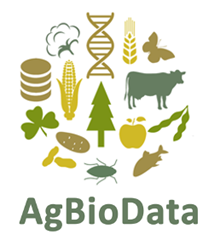

General Information
General Information
Meeting Registration
Thursday: 3:00 PM to 9:30 PM: Registration Lobby
Friday: 7:30 AM to 12:30 PM: Registration Lobby
Meals
All meals will be served in Ballrooms B&C; serving hours as listed in the Program. Coffee, tea, and soft drinks are available at no charge during the beverage breaks.
Talks and Posters
All Talks will be presented in Ballroom A.
Posters will be presented in Ballrooms B&C, adjacent to where the meals will be held. Posters should be hung on Thursday at 3 PM and stay up until Sunday morning but must be removed by 9 AM Sunday. During poster sessions, presenters of odd-number posters are asked to stand by their posters 1:30-3:00 PM on Friday and 3:00-4:30 PM on Saturday. Presenters of even-numbered posters should stand by their posters 3:00-4:30 PM on Friday and 1:30-3:00 PM on Saturday.
The maize meeting is a forum for presenting and discussing unpublished material. Photographing or recording of talks and posters is not allowed.
Health and Safety Policy
The Maize Genetics Cooperation (MGC) is committed to the health and safety of all Cooperation members and attendees of the Annual Maize Genetics Meeting (MGM). In keeping with the United States Centers for Disease Control (CDC) guidelines, we have developed the following health & safety policy for the 2024 Maize Genetics Meeting.
All attendees of the MGM in-person meeting are encouraged to be fully vaccinated against COVID-19 and up to date on their flu shots before attending the conference.
You may NOT attend the conference if you:
Are currently required to be in isolation for COVID-19.
Are sick and suspect that you have COVID-19 or the flu.
Have had a fever within the past 24 hours.
Upon picking up your badge at the in-person conference, we will ask you to certify that you have met the above requirements. If we find that you have knowingly falsified this information, you will forfeit your membership to the Maize Genetics Cooperation and be expelled from the meeting with no refunds.
Masks are encouraged when in common spaces but not required. Attendees wearing masks are encouraged to wear the most protective mask possible such as N95, KN95, or at a minimum surgical masks, while at the MGM to limit the spread of disease.
If you develop COVID-19 symptoms at the Maize Meeting, please stay in your hotel room, and follow CDC guidance, and if you need assistance, please contact the hotel front desk or Tricia Simmons at 720-250-7033.
The MGC has approved these enhanced health and safety measures to protect you, other attendees, and hotel and conference staff. All attendees must abide by these guidelines and follow instructions posted on-site. The MGC assumes no responsibility for liability or financial hardship that may arise during or as a result of your attendance at the meeting. This includes but is not limited to, liability arising from illness, injury, or death associated with infection of COVID-19, flu, communicable disease or complications, symptoms or other effects resulting from contracting COVID-19, the flu, or other communicable diseases.
Hospitality
After the evening sessions on Thursday and Friday there will be informal socializing and poster gazing in Ballrooms B&C, with refreshments, games, and open bar provided from 9 PM - 12 AM. On Saturday evening there will be informal socializing in the Ballrooms B&C, with refreshments and cash bar from 9 PM - Midnight, trivia from 10 PM - 12 AM.
## Access to recorded sessions
All talks and sessions will be recorded and available to each meeting registrant. Registrants will receive an invitation email to view the recordings within 1-2 weeks after the meeting concludes from the Maize Genetics Cooperation (noreply-maize@iastate.edu). If you do not receive the email by March 31st, please check your junk/spam folder. If you still haven’t received it, or you are having issues with the site where the videos are hosted, please email john.portwood@usda.gov.
Steering Committee
Please share your suggestions and comments about the meeting with the 2024 Steering Committee
Rubén Rellán-Álvarez, Chair (rrellan@ncsu.edu) Madelaine Bartlett (mbartlett@umass.edu) Frank Hochholdinger (hochhold@uni-bonn.de) Sylvia Morais de Sousa Tinoco (sylvia.sousa@embrapa.br) |
Ex officio: Carson Andorf - MaizeGDB Erin Sparks - Treasurer Darwin Campbell – Planning / Audio Visual John Portwood - Logistics Coordinator Meeting planning: Tricia Simmons – Conference Direct |
|||
Acknowledgments
Many thanks go to Carson Andorf, John Portwood, the MaizeGDB staff from the USDA-ARS, and Darwin Campbell (Iowa State University) for their tremendous efforts in organizing, assembling, and advertising the conference program. We also greatly thank Tricia Simmons, Garrett Simmons, and their team at ConferenceDirect for helping to organize and implement the conference registration platform, handling meeting logistics with the venue staff, and dealing with many other issues. Special thanks are also extended to the Raleigh Convention Center staff for their help in organizing this conference. Thanks go to Sarah Jensen, Graziana Taramino, and Petra Wolters for their efforts in securing funding to offset meeting costs. Finally, many, many thanks go to the Steering Committee for organizing the 66th Maize Genetics Meeting.
FAIR Data Management

…A Reminder from the MaizeGDB team
MaizeGDB is a founding member of the AgBioData Consortium. AgBioData is a consortium of agricultural biological databases with the mission of consolidating standards and best practices for acquiring, displaying, and reusing genomic, genetic, and breeding (GGB) data.
Member databases of the AgBioData consortium follow the Findable, Accessible, Interoperable, and Reusable (FAIR) principles, enhancing the accessibility and reusability of large-scale agricultural research data. MaizeGDB consolidates vast amounts of published data, simplifying discovery and utilization for our community. Your commitment to FAIR principles (go-fair.org) enables MaizeGDB and similar platforms to integrate and leverage even more data efficiently. Below are essential guidelines for applying FAIR data management practices to your generated data, as well as to the data you encounter in research papers and grant reviews.
Database Selection and Accession Reporting: Ensure your data, such as DNA/RNA/Protein Sequences, genome assemblies, and annotations, are submitted to long-term repositories like NCBI. Always include accession numbers in your publication. For maize SNPs, submit them to EVA at EBI. Explore more repositories at maizegdb.org/FAIRpractices and consult journal guidelines for additional instructions.
Data Publication: Publish your data concurrently with your paper. For datasets not included with the article, secure a persistent identifier (e.g., DOI) from the data repository to reference in your paper. Datasets can be independently published in journals like Micropublication, ensuring they are linked to the corresponding paper. Verify the presence and FAIR compliance of reported data during peer review.
Gene and Protein Identifier Usage: Use established identifiers for genes, gene models, and genomes. Avoid renaming existing genes. Look up gene symbols at MaizeGDB and use precise gene model IDs. For protein data, reference the correct ID from NCBI or UniProt, submitting new sequences to these repositories as necessary. Maize nomenclature guidelines: https://www.maizegdb.org/nomenclature
Metadata and File Format Standards: Attach comprehensive metadata to your datasets and adhere to accepted file formats. Treat metadata with the same rigor as experimental and analysis work. Incomplete or poorly described datasets compromise reusability, reproducibility, and overall research quality.
Machine-Readable Data Sets: Ensure your data is machine-readable, using permanent identifiers and correct terminology (e.g., using correct case for genetic loci, incorporating GO, PO, PATO terms). Validate your data against common, established machine-readable formats.
Data Management Planning: Allocate sufficient time for meticulous data management, similar to the effort dedicated to other research aspects.
FAIR Data Standards: Here are some resources:https://www.go-fair.org,https://doi.org/10.1093/database/bay088.
We are always happy to answer your questions on these issues! https://www.maizegdb.org/contact
What’s NEW at MaizeGDB!
In 2023, MaizeGDB expanded its pan-genomic resources* for the representative B73 genome, all NAM founder lines, Pan-Andropogoneae, and other historically important lines. These resources now include:
104 genomes
Over 2 million gene model annotations
Pan-gene dataset, which includes 58 annotations
Over 500 downloadable files
351 target databases in BLAST
Genome browsers for select quality genomes with over 1,500 total tracks
400+ high-throughput sequencing data for over 80 tissues/conditions
300+ traits linked to over 40,000 positions in the genome
80+ million SNPs from EVA and Ensembl Plants
Genotype data remapped to B73 v5 for 1,500 maize accessions
Over 1 million predicted GO terms across 31 genomes
Resources for 4 insertion mutation collections
MaizeMine has been updated to include B73_v5 and the NAM founder lines
PanEffect, a tool for exploring variant effects.
AlphaFold and ESMFold protein structures on the browser and gene model pages
Protein structure search and comparison tools**
Transposable elements, structural variation, regulatory sites, and more…
If you have questions on how to access/use these resources, contact us at https://www.maizegdb.org/contact
*Woodhouse MR et al. (2021) A pan-genomic approach to genome databases using maize as a model system. BMC Plant Biology. doi:https://doi.org/10.1186/s12870-021-03173-5.
**Woodhouse MR et al. (2023) Maize Protein Structure Resources at the Maize Genetics and Genomics Database. Genetics. doi: https://doi.org/10.1093/genetics/iyad016.
Thank you to the 2023 MaizeGDB Editorial Board Members!
Anuradha Singh, Postdoc, Michigan State University (2nd Year!)
Qiang Ning, Huazhong Agricultural University, China
Aimee Uyehara, University of California-Riverside
Keting Chen, Iowa State University
Jan Yun, Chinese Agricultural University, China
Editorial Board DEI Papers recommended by CODIE Editors!
Andrew Egesa, Graduate Student, University of Florida, Gainesville, FL
MaizeGDB has partnered with microPublication Biology!
microPublication Biology (Caltech Publishers) is a new peer-reviewed, open-access journal that publishes single experiment results, which are incorporated directly into community knowledgebases like MaizeGDB!
microPublication Biology gets your individual research findings, that might otherwise remain unpublished, out to the scientific community while providing credit to those who did the work. Articles are small (one figure, few pages), peer-reviewed, assigned a DOI and are discoverable on PMC, PubMed, EuropePMC, and Google Scholar.
How it works: Each maize microPublication Biology submission will be vetted by MaizeGDB curators at the time of peer review to ensure data meets FAIR data standards. Upon acceptance, your article is curated into MaizeGDB which couples the publication with curation and discoverability in MaizeGDB. The cost to publish is only $250.
Here are some recent maize publications:
Lucas JR, Dupree B. Stomatal pore width and area measurements in Zea mays. MicroPubl Biol. 2023 Aug 4;2023:10.17912/micropub.biology.000893. doi: 10.17912/micropub.biology.000893.
Hazelwood OS, Hostetler AN, Ikiriko II, Sparks EE. Characterization of mechanosensitive MSL gene family expression in Zea mays aerial and subterranean brace roots. MicroPubl Biol. 2023 Jun 16;2023:10.17912/micropub.biology.000759. doi: 10.17912/micropub.biology.000759.
Siosiou A, Sparks EE, Tsialtas IT. Brace roots in C 3 Poaceae: where have they gone? MicroPubl Biol. 2023 Sep 20;2023:10.17912/micropub.biology.000939. doi: 10.17912/micropub.biology.000939.
For more information:
Visit the journal: https://www.micropublication.org
Questions can be sent to:
Karen Yook, Executive Editor (karen.yook@micropublication.org)
Carson Andorf, Maize Science Officer (carson.andorf@usda.gov)